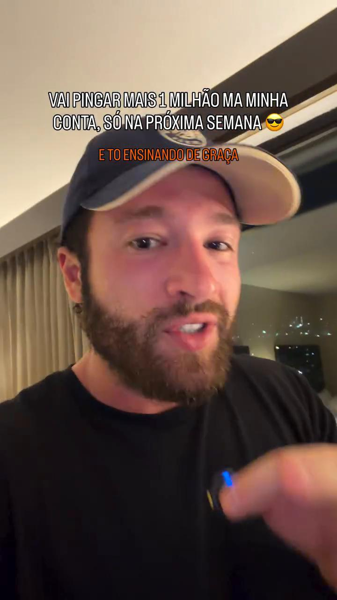
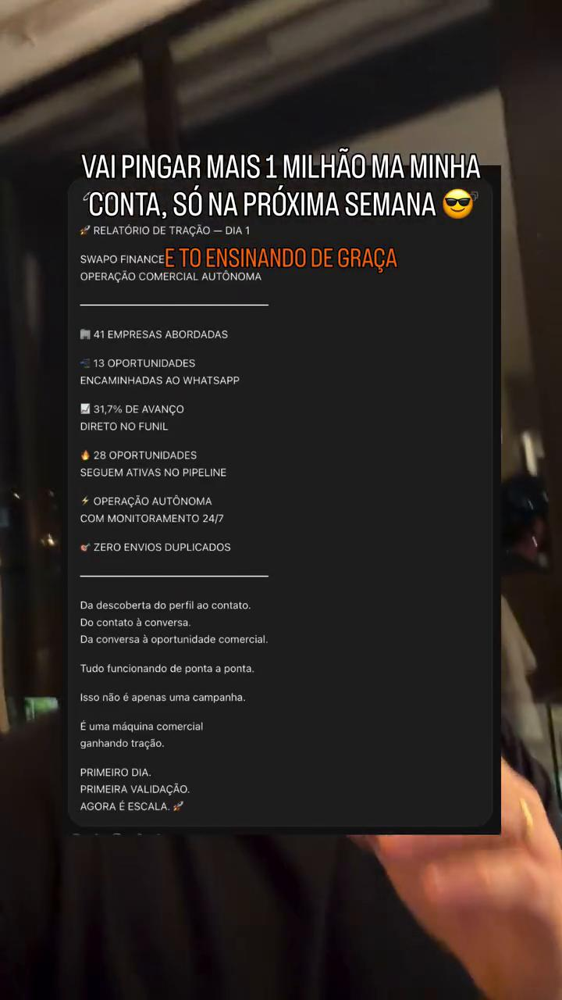
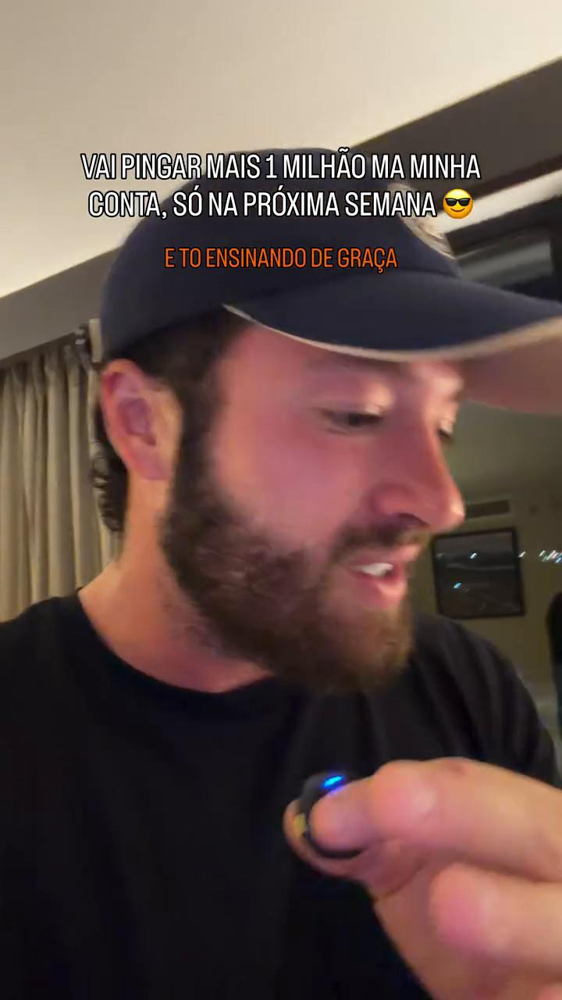

Análise técnica do vídeo de referência, mapeamento do influenciador, investimentos e pré-requisitos para a Legado Performance.
O autor do vídeo é Matheus Gomes (Matheus de Oliveira Gomes), empresário e fundador da Swapo Finance (fintech de operações globais e câmbio) e do ecossistema Notyped.
No vídeo gravado em San Salvador, ele apresenta um caso de "Operação Comercial Autônoma" prometendo faturamento de mais de R$ 1 milhão na próxima semana e afirmando que "está ensinando tudo de graça para você copiar e colar".
No entanto, ao analisar a estrutura do vídeo e as provas em tela, fica claro que o vídeo é uma isca comercial clássica de topo de funil para atrair empresários para as mentorias privadas e ferramentas de revenda dele:



Se o Leo levantar essa hipótese, aqui está a resposta técnica, transparente e comercialmente irrefutável:
| Critério | Estrutura Alugada do Matheus Gomes | Estrutura Proprietária da Legado |
|---|---|---|
| Custo Contínuo | Mensalidade alta em dólar ou anuidade pesada para a plataforma dele. | Zero royalties. Apenas ferramentas oficiais (< R$ 250/mês para OpenAI e ManyChat). |
| Propriedade do Ativo | Você aluga um software caixa-preta de terceiro. Se ele cancelar o serviço, você perde tudo. | A Legado é dona de 100% da tecnologia, dos prompts e da base de leads. |
| Revenda (Máquina de Orçamentos) | Você vira apenas um afiliado pagando pedágio por cliente colocado. Margem baixa. | Você vende a Máquina de Orçamentos por R$ 3k a R$ 5k com 100% de margem no bolso. |
| A Inteligência Real | A ferramenta dele não sabe as regras da Legado. A parametrização terá que ser feita igual. | A IA já nasce configurada sob medida para o público e o SDR da Legado. |
Comparativo completo de escopo, pré-requisitos técnicos e investimento financeiro:
| Item de Avaliação | Opção 1: MVP Experimental com Riscos | Opção 2: Máquina Comercial Legado (Oficial) |
|---|---|---|
| Objetivo Principal | Testar disparo frio em escala reduzida, sabendo dos riscos de bloqueio. | Construir uma máquina definitiva de vendas, segura e escalável para o SDR. |
| O que vamos precisar da Legado |
• 2 a 3 contas secundárias de Instagram (descartáveis) • Contratação de proxy móvel 4G para rotação de IP • Lista de perfis concorrentes ou hashtags para raspagem • Chip de WhatsApp secundário para teste de recepção |
• Acesso de admin ao Gerenciador de Negócios da Meta (BM) • Conta oficial @legadoperformance vinculada a Página Facebook • Conta no ManyChat Pro (API oficial da Meta) • Chave de API da OpenAI (modelo GPT-4o-mini) • Número do WhatsApp do SDR para transbordo automático • Perguntas de qualificação e critérios de corte (ICP) |
| Investimento de Setup (Pixel Studio) | R$ 500 (Taxa única de implementação do teste) | Valor a Combinar (Alinhamento direto entre nós) |
| Custos de Ferramentas / Plataformas |
• R$ 120 a R$ 200 (compra de contas teste + proxy móvel) • Custo imprevisível de reposição por perda de contas |
• OpenAI GPT-4o-mini: R$ 40 a R$ 100/mês • ManyChat Pro oficial: ~R$ 85/mês ($15 USD) • Gateway de WhatsApp: Zero a R$ 80/mês Total de ferramentas: Menos de R$ 250/mês |
| Investimento Total Estimado | R$ 620 a R$ 700 (Setup + descartáveis) | Ferramentas < R$ 250/mês + Setup a combinar |
| Nível de Risco | Alto Risco: Viola termos da Meta. A conta cai em dias. | Risco Zero: 100% homologado pela API oficial da Meta. |
| Potencial Comercial | Apenas teste técnico. Não serve para vender a clientes. | Playbook validado para vender a clientes por R$ 3k a R$ 5k de setup. |
• Por que não rodar disparo frio na conta oficial? O perfil @legadoperformance é o patrimônio da agência. Disparar mensagens não solicitadas ativa a proteção antifraude da Meta. O caminho oficial protege o CNPJ e o BM da empresa.
• Por que anúncios para o Direct em vez de adivinhação de perfis? Anúncios de Direct têm custo por mensagem baixo e atraem quem já sente a dor. O lead chega aberto a conversar, elevando a taxa de triagem para mais de 30%.
• Por que entregar no WhatsApp do SDR? A IA atua como recepcionista de elite: elimina curiosos, extrai faturamento e entrega o lead quente na mão do vendedor fechar a reunião.
Se o objetivo do Leo for testar scripts por curiosidade sem compromisso com escala, o MVP de R$ 500 atende com os riscos assumidos em perfis de teste. Se a meta for implementar uma máquina séria que traga clientes para a Legado e gere o produto Máquina de Orçamentos para faturar alto com a carteira de clientes, a Opção 2 é o único caminho profissional.